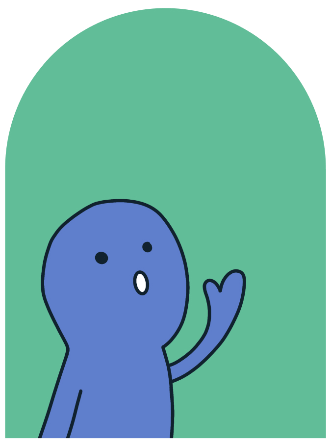
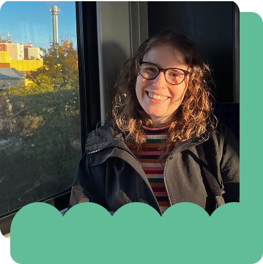

Hi, mein Name ist Joan!
Medienpädagogin
& Learning Designerin
Wissenschaftskommunikation · Partizipative Bildung · Spielerisches Lernen
TüftelLab Digital

Workshop DesignAusgewählte Workshops
SandkastenCharakterdesigns
Learning DesignKI Box Klima
Über mich
Joan-Carolin Paetz
→ Medienpädagogin
→ Wissenschaftskommunikatorin
→ Designerin

Medien oder Bildung? Irgendwie stand ich immer mit je einem Bein in beiden Disziplinen.
Durch meine Erfahrung im EdTech, meinen Hintergrund als Designerin und meinen Masterabschluss in Medienpädagogik verbinde ich verschiedene Welten: Kreative Problemlösung und technologisches Verständnis treffen auf Pädagogik und die Frage, wie Menschen lernen, sich Wissen aneignen und gemeinsam gestalten.
Am liebsten arbeite ich handlungsorientiert und partizipativ: Ich stelle lieber Fragen als Antworten, gebe Werkzeuge statt fertiger Lösungen und glaube daran, dass die besten Formate dort entstehen, wo Menschen selbst gestalten dürfen. Den Spagat – komplexe Inhalte zugänglich und bearbeitbar zu machen und gleichzeitig ihre Komplexität zu bewahren – möchte ich immer weiter erkunden.
Aktuell arbeite ich als Lehrkraft an einer Fachschule für Sozialpädagogik. Generell findet ihr mich aber dort, wo Medienbildung, Wissenschaft und Gestaltung aufeinandertreffen.
Mein Werdegang
Leitung Lerncontent & Learning Designerin
Junge Tüftler gGmbH
M.A. Medienpädagogik
Fachhochschule Südwestfalen
(Motion) Designerin
verschiedene EdTech-Unternehmen
B.A. Multimedia Production
HAW Kiel